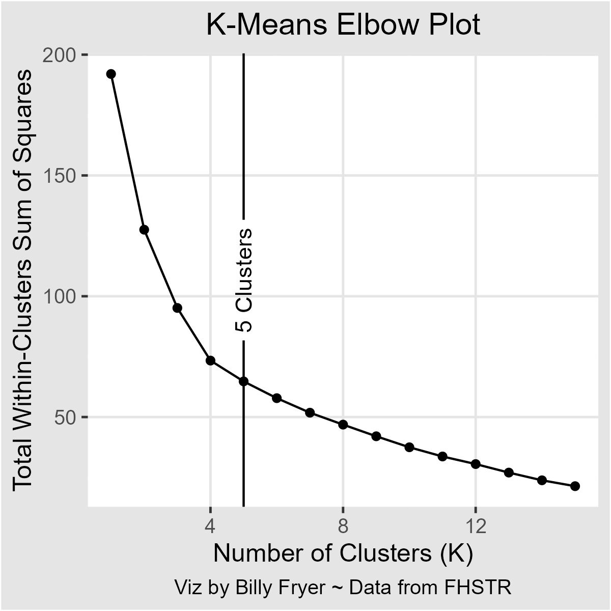
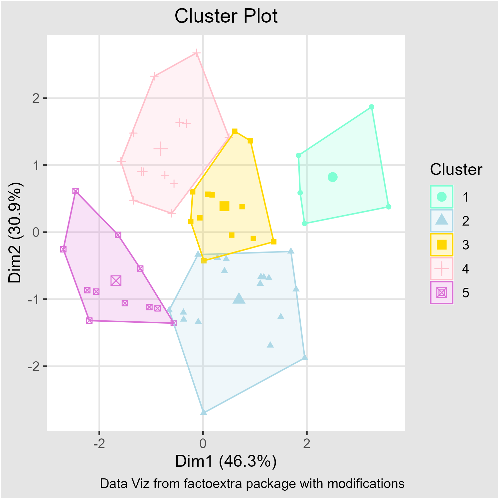
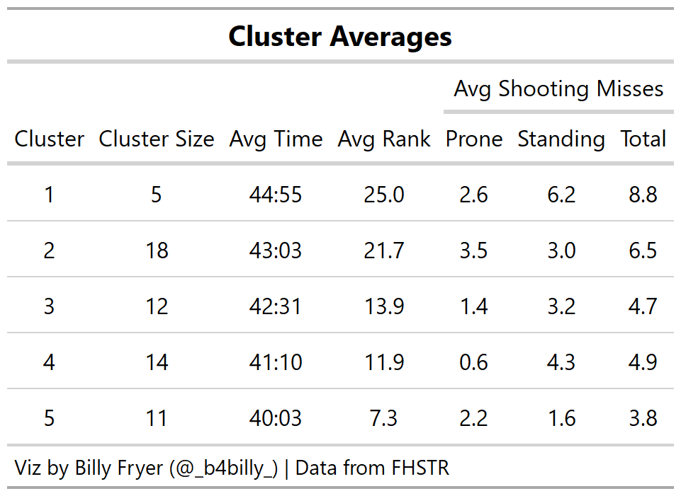
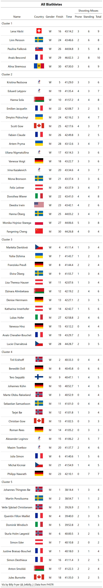
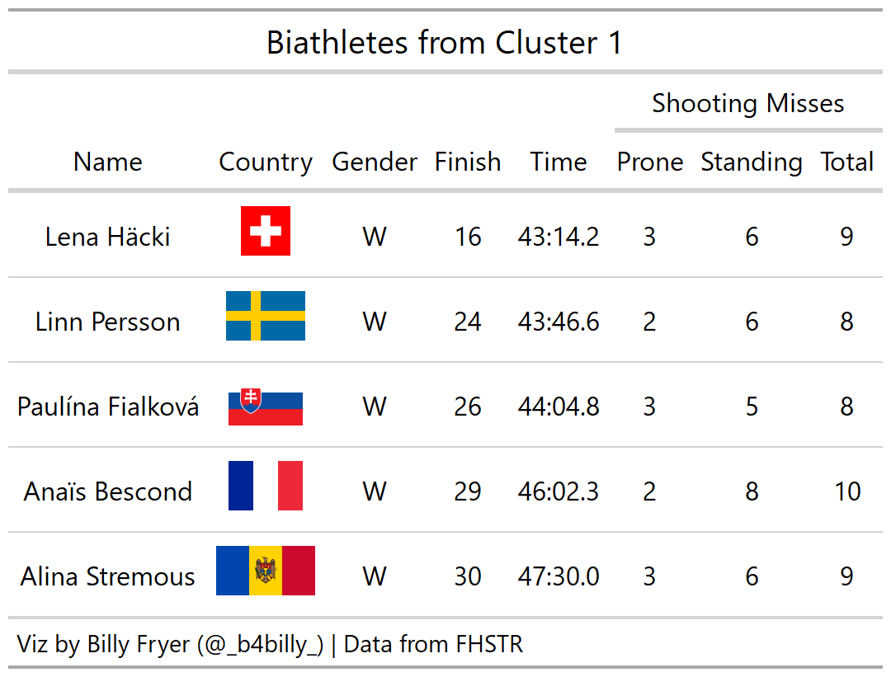
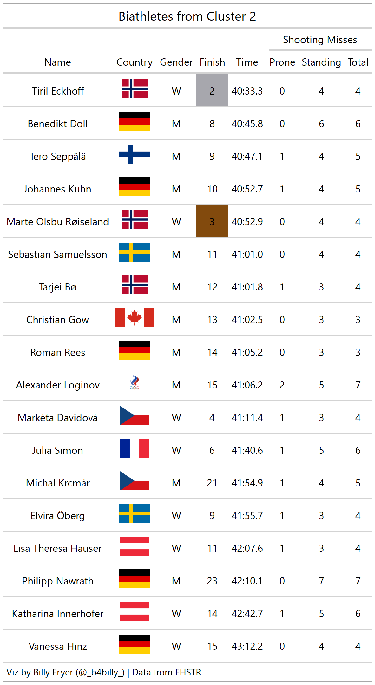
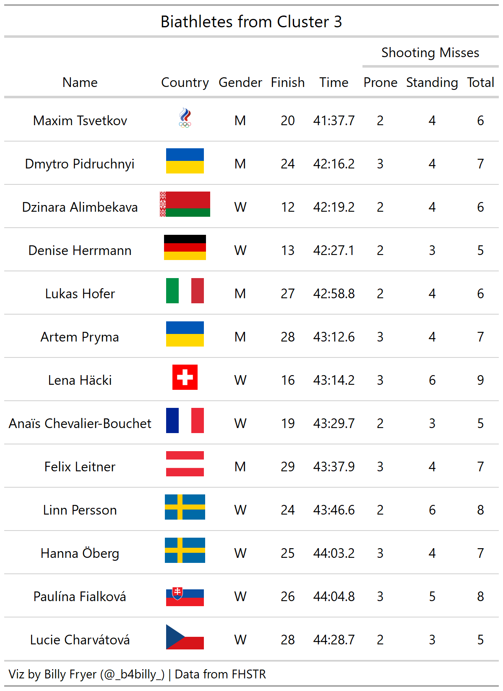
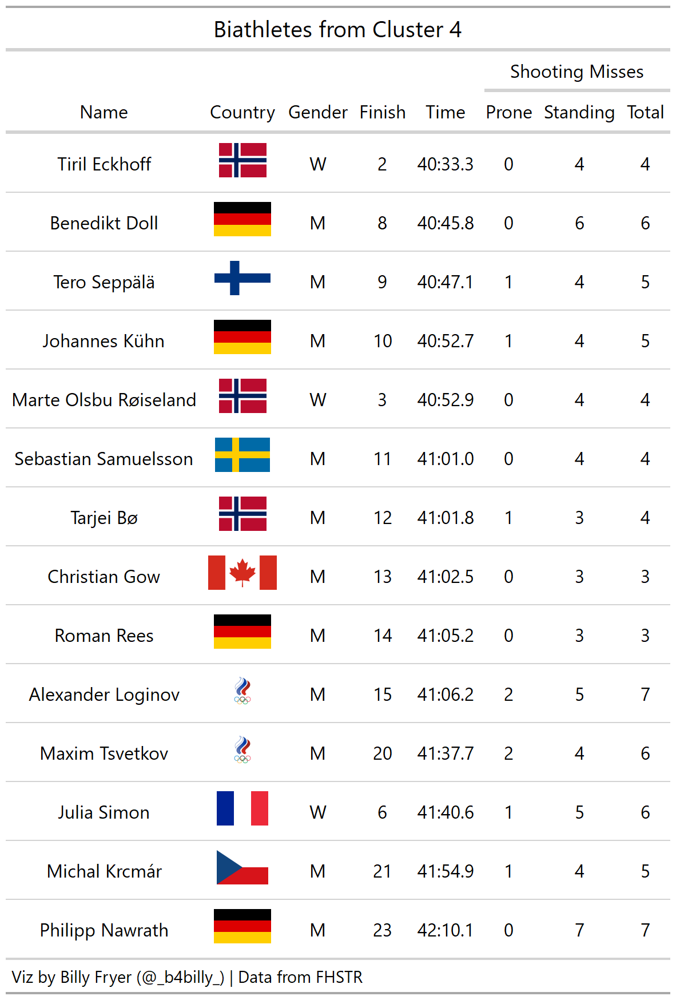
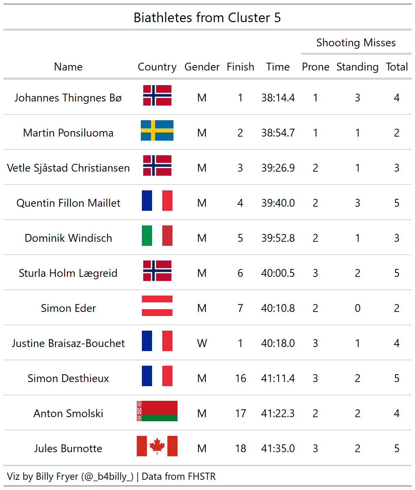

This project analyses skiiers in the Mass Start Biathlon event from the Beijing 2022 Winter Olympic Games. In events like the biathlon based on time, normally all we see is the final ordering of athletes. However, these results can vary based on a variety of things especially in the Olympics. Factors such as jet lag, nutrition, or sleeping in an unfamiliar bed (luckily not cardboard ones) can all have an effect on how well an athlete performs. This study groups athletes together in tiers using the k-means clustering algorithm to see what athletes may have been similar to one another, even if their final ranking may not show it.
Biathlon is a sport that combines the two disciplines of cross country skiing and shooting. This analysis chooses to focus on the Mass Start format of the biathlon discipline. In the Mass Start, all 30 contestants are lined up and begin the race at the exact same time and are on the course along side their competitors. In other variations, such as the Individual or Pursuit, contestants have staggered starts. For the skiing portion, biathletes ski a total of 5 loops; for men these loops are 3 km (15 km total) and for women the loops are 2.5 km (12.5 km total) (1). For the shooting portion of the biathlon, the athletes shoot at 5 targets from 50 meters away after each of the first four laps (1). After completing laps 1 and 2, the athletes shoot at a target with a diameter of 45 millimeters from the prone or laying down position (1). After laps 3 and 4, the athletes shoot at a target with a diameter of 115 millimeters from a standing position (1). After every shooting range session, biathletes must ski a 150 meter penalty loop for each shot they miss (2). After their final range session, the athletes complete their fifth lap and finish the race. The biathlete that completes the course the fastest is the winner.
For those interested in watching the Mass Start Events from the 2022 Beijing Olympics, they are linked below:
Biathlon - Men’s 15km Mass Start from the Olympics YouTube Page
{{% youtube "B6uXE5-SPbI" %}}
Biathlon - Women’s 12.5km Mass Start from the Olympics YouTube Page
{{% youtube "ZF2gCGLmBlk" %}}
The data for this project comes from the FHSTR package that I created. This package contains data from NBC’s API for all events in the 2022 Beijing Winter Olympic Games. For more information about the FHSTR package, visit https://b4billy.github.io/FHSTR/.
For this analysis, data for all 30 participants from both the men and women’s race were used for a total of 60 athletes. Four variables were used: number of shooting misses in the prone or laying down position, number of shooting misses in the standing position, total time taken to complete the event, and the sex of the biathlete. These variables were centered and scaled for analysis except for sex. Unfortunately, this was all the data available for analysis. If the data were available, more variables to consider would include time spent on range, time spent skiing penalty loops, and time in between shots among others. This data would further help distinguish what areas of the events biathletes could focus on to improve their times.
I decided to use k-means clustering to group these athletes together. In this case, the k-means algorithm iteratively groups athletes together until reaching an equilibrium. To determine the proper number of clusters, I plotted the total within-clusters sum of squares and determined that the proper number of clusters to use should be 5.

I then ran the k-means algorithm to assign athletes to the 5 clusters. Each of these clusters appears to be pretty distinct with minimal overlapping by looking at the plot of the first two principal components below. As an aside, principal component analysis was not utilized in modeling, only for this visualization. Cluster names are arbitrarily assigned.

The table below shows average values for each cluster for the factors used in the model as well as a few others. For average rank, I left each athlete with their original rank separated by sex. Therefore, the fastest male and female athlete both receive a rank of 1 while the slowest athlete of each sex receive a rank of 30.

An interactive 3D scatter plot of all athletes in the study is below. Along the axes are standing position shooting misses, prone position shooting misses, and skiing times in minutes. Hover over a point to see the athlete’s name as well as see their other stats such as prone shots missed, standing shots missed, time raced as well as the cluster to which each athlete was assigned. The plot can also be moved around to be looked at from different perspectives as well as zoomed in as needed.
As a reference guide, the table below includes all 60 biathetes that competed in the mass start event. They are arranged by cluster and then by time. Each cluster is discussed individually afterwards.

This cluster appears to have captured the athletes who really struggled shooting, particularly form the standing position. With an average of 8.8 shooting misses, athletes in this cluster unfortunately missed too many shots and thus incurred too many penalty laps to be in contention.

The athletes in Cluster 2 shot much better from the standing position which lead to a pretty drastic decrease in time from those in Cluster 1. However, these biathletes still missed between 3-5 shots from the prone position which is in most cases still a full shot behind the biathletes in the more elite clusters. These misses typically led to bloated times as well.
One interesting biathlete in this cluster is Kristina Reztsova. She finished just off the podium in 5th, 5 places higher than the next closest female skier in this cluster. This likely means that she is a very strong skier and was able to overcome most of the penalty laps but not all of them. With cleaner range sessions, she could potentially follow up this appearance with a medal in Milano Cortina and add to her bronze and silver medals she won in the biathlon relays (assuming athletes from Russia are allowed to compete).

Cluster 3 is our tier of biathletes that are on the verge of becoming contenders. For the most part, this cluster is women that shot very well - only missing 3 or 4 which is right where one needs to be. There were a few however that missed more shots and slightly slower times. Similar to Kristina Reztsova, with cleaner shooting performances they too can get into the medal hunt.

Cluster 4 is a very interesting mix of biathletes. On the women’s side, the biathletes that placed 2nd, 3rd and 6th all landed in this cluster. With an average of 4.667 missed shots between the 3 of them, it’s likely that their outcome solely depended on if they or their competitors had a good day or not. On the men’s side, these were the contenders that fell just short of the podium. Most missed between 3-5 shots which is similar to the medalists. However, they didn’t quite ski fast enough to get on the podium. The difference between clusters 3 and 4 appears to be that Cluster 3 has more women while Cluster 4 has more men and in addition the more elite women. This is probably due to the fact that overall average time for men was faster than the average time for women.

This cluster for the most part has the most elite biathletes from Beijing 2022. It contains the 1st-7th place male athletes as well as the female gold medalist Justine Braisaz-Bouchet. With minimal shooting misses, biathletes in this cluster were able to focus on skiing a fast time around the loop in order to try and achieve their Olympic dream.
One of the most fascinating biathletes in the sport right now is men’s gold medalist Johannes Thingnes Bø. He finished a full 40 seconds clear from the silver medalist and more than a minute faster than the bronze! During the Beijing 2022 Games, he finished with 4 golds, a bronze, and a 5th place finish. Between him and his brother Tarjei (Cluster 4), their combined medal count would have been enough to place 9th in the country medal count.
 ## Conclusion
In conclusion, outside of the gold medal on the men’s side, this event was wide open. A few less seconds of skiing or one less missed shot could have been enough to steal a medal in either race. In the future, when you see a race standings, I hope you consider imagine the racers in different tiers of competitiveness and contention for medals rather than solely the gold, silver, and bronze.
Biathlon 101: https://www.nbcolympics.com/news/biathlon-101-rules
Biathlon World Article: https://www.biathlonworld.com/inside-ibu/sports-and-event/biathlon-mass-start
Men’s 15kilometers Mass Start video from the Olympics YouTube Page: https://www.youtube.com/watch?v=B6uXE5-SPbI
Women’s 12.5kilometers Mass Start video from the Olympics YouTube Page: https://www.youtube.com/watch?v=ZF2gCGLmBlk